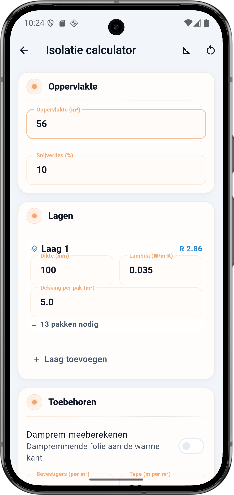
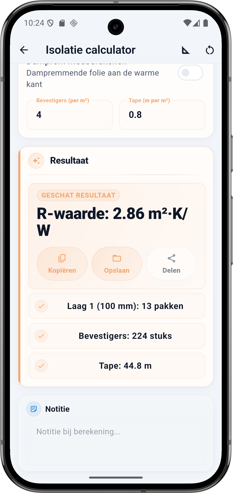

Wat vraagt de calculator
De Isolatie calculator heeft drie blokken: Oppervlakte, Lagen (meerdere mogelijk) en Toebehoren. Elk veld hieronder komt één-op-één overeen met de app.
Oppervlakte
- Oppervlakte (m²) — de netto te isoleren oppervlakte. Trek dakramen en vaste doorvoeringen eraf. Voor spouwisolatie is dit de totale gevel minus kozijnopeningen.
- Snijverlies (%) — standaard 10%. Bij een complex dak met veel balken of een gevel met veel kozijnen: 12 tot 15%.
Lagen
Per laag vul je drie waarden in. BuildExact berekent per laag direct de R-waarde en het aantal pakken dat je nodig hebt. Je kunt onbeperkt lagen stapelen voor combinatie-isolatie (bijvoorbeeld tussen de spanten plus een extra laag onder de spanten).
- Dikte (mm) — de dikte van die ene laag. 100 mm is gangbaar voor dak, 60 tot 80 mm voor spouw, 150 tot 200 mm voor vloer.
- Lambda (W/m·K) — de warmtegeleidingscoëfficiënt van jouw isolatiemateriaal. Lager = beter isolerend. Staat op de verpakking.
- Dekking per pak (m²) — staat op de verpakking, meestal 3 tot 6 m² per pak afhankelijk van dikte en afmeting.
💡 Lambda-waarden per materiaal
Vuistregels (W/m·K): glaswol 0,032 tot 0,040 · steenwol 0,034 tot 0,040 · PIR / PUR 0,022 tot 0,026 · EPS 0,032 tot 0,038 · houtvezel 0,038 tot 0,045 · cellulose 0,039. PIR geeft bij dezelfde dikte bijna 50% meer R-waarde dan glaswol, maar is ook duurder en lastiger af te werken.
Toebehoren
- Damprem meeberekenen — dampremmende folie aan de warme kant van je constructie. Zet aan voor dakisolatie, binnenisolatie van gevel of plafondisolatie.
- Bevestigers (per m²) — standaard 4 per m² voor minerale wol tussen spanten. Harde platen (PIR, EPS) op een vlak oppervlak: 6 tot 8 per m² met kunststof plug.
- Tape (m per m²) — om de damprem naden en randen af te plakken. 0,8 m per m² is gangbaar voor dakisolatie zonder dakvensters. Hoger bij veel randen.
De formule onder de motorkap
De R-waarde per laag is dikte gedeeld door lambda. Dikker is beter, lagere lambda is beter. Totale R-waarde van een constructie is de som van alle lagen (plus de bouwkundige R van het dak of de muur zelf).
Rekenvoorbeeld — dak 56 m² met 100 mm steenwol
Dit is de situatie uit de screenshot: één dakvlak van 56 m², één laag isolatie van 100 mm met lambda 0,035 W/m·K, dekking 5,0 m² per pak, 10 procent snijverlies. Vier bevestigers per m² en 0,8 m tape per m². Geen damprem (apart project).
Invoer
| Veld | Waarde |
|---|---|
| Oppervlakte | 56 m² |
| Snijverlies | 10 % |
| Laag 1 — dikte | 100 mm |
| Laag 1 — lambda | 0,035 W/m·K |
| Laag 1 — dekking per pak | 5,0 m² |
| Damprem | Nee |
| Bevestigers per m² | 4 |
| Tape per m² | 0,8 m |
Berekening stap voor stap
- R-waarde laag 1: 0,100 m / 0,035 = 2,857 → 2,86 m²·K/W
- 56 m² × 1,10 (10% snijverlies) = 61,6 m² totaal nodig
- 61,6 ÷ 5,0 m² per pak = 12,32 → afgerond 13 pakken
- 56 m² × 4 bevestigers = 224 stuks (bevestigers rekenen vanaf netto oppervlak)
- 56 m² × 0,8 m = 44,8 m tape
Resultaat
| Onderdeel | Waarde |
|---|---|
| R-waarde | 2,86 m²·K/W |
| Laag 1 (100 mm) | 13 pakken |
| Bevestigers | 224 stuks |
| Tape | 44,8 m |
⚠️ R-waarde is niet hetzelfde als Rc-waarde
R-waarde is puur van de isolatielaag zelf. Rc-waarde is de totale weerstand van de hele constructie — isolatie plus dakplaten, binnenzijde, buitenzijde en luchtlagen. Rc is wat de bouwregelgeving (NL: minimaal 6,3 voor nieuwbouwdak) en subsidies hanteren. In BuildExact krijg je R; voor Rc tel je de bouwkundige weerstand van je constructie erbij op (meestal 0,3 tot 0,5).
Dikte en materiaal vergelijken
Zelfde dak van 56 m², verschillende materialen en diktes — zo verschuift de R-waarde:
| Materiaal (lambda) | Dikte | R-waarde | Geschatte Rc* |
|---|---|---|---|
| Steenwol (0,035) | 100 mm | 2,86 | 3,2 |
| Steenwol (0,035) | 160 mm | 4,57 | 4,9 |
| Steenwol (0,035) | 200 mm | 5,71 | 6,0 |
| PIR (0,024) | 100 mm | 4,17 | 4,5 |
| PIR (0,024) | 140 mm | 5,83 | 6,2 |
* Geschatte Rc = R + 0,3 bouwkundige weerstand. Voor nieuwbouwdak eist het Bouwbesluit minimaal Rc 6,3. Voor renovatie met subsidie geldt in Nederland vaak Rc minimaal 3,5 (dak), 3,5 (gevel) of 3,7 (vloer).
Zo doe je dit in BuildExact
- Open de Isolatie calculator onder Materialen. Vul oppervlakte en snijverlies in.
- Voeg laag 1 toe met dikte in mm, lambda in W per m K en dekking per pak in m². De R-waarde van die laag verschijnt direct in beeld.
- Extra lagen? Klik 'Laag toevoegen' — handig voor combinatie-isolatie (tussen plus onder de spanten). R-waardes stapelen automatisch.
- Zet damprem aan als je constructie dat vereist (dak, gevel binnenzijde). Vul bevestigers per m² en tape m per m².
- Bewaar of deel het resultaat vanuit de resultaatkaart — of koppel aan een project zodat de pakken op je offerte komen.
Veelgestelde vragen
🧊 Reken je isolatie in BuildExact
Gratis in de app. Reken, bewaar als project, zet om in een offerte-PDF met je logo — allemaal zonder opnieuw te typen.
Gratis downloaden